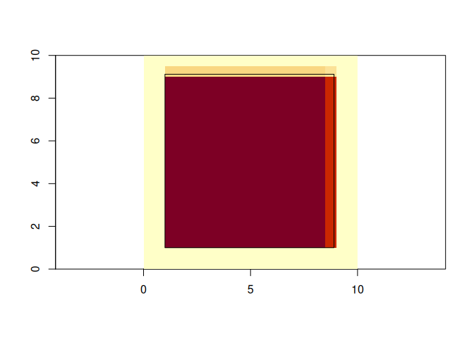

Rasterize geometry without materializing any pixel values. controlledburn produces sparse tables for polygon, line, and point input — one type-pure table per geometry kind.
Two modes: coverage (exact analytical coverage fractions via vendored exactextract math) and approx (cell-centre rule, fasterize semantics, runs only). Both are O(perimeter) in time and memory; no dense matrix is allocated.
Dependencies: cpp11, wk. No GEOS, no sf, no Armadillo.
Usage
library(controlledburn)
library(geos)
poly <- as_geos_geometry("POLYGON ((1 1, 8.9 1, 8.9 9.12, 1 9.12, 1 1))")
# Coverage mode (default): exact boundary fractions
r <- burn(poly, extent = c(0, 10, 0, 10), dimension = c(20L, 20L))
r
#> <controlledburn> 20 x 20 grid, 1 geometry
#> runs: 45 (240 interior cells)
#> edges: 32 polygon boundary cells
#> sparsity: 32.0% empty
# Approx mode: cell-centre rule, runs only, no edges
r_approx <- burn(poly, extent = c(0, 10, 0, 10), dimension = c(20L, 20L),
mode = "approx")
r_approx
#> <controlledburn> 20 x 20 grid, 1 geometry
#> runs: 16 (256 interior cells)
#> edges: 0 polygon boundary cells
#> sparsity: 36.0% empty
# Materialize only when you need it
mat <- materialize_chunk(r)
ximage::ximage(mat, extent = c(0, 10, 0, 10), asp = 1)
plot(poly, add = TRUE)
unique(c(mat))
#> [1] 0.000 0.240 1.000 0.192 0.800
## no variation in the approx mode
unique(c(materialise_chunk(r_approx)))
#> [1] 0 1Default grid parameters
With no extent or dimension, controlledburn derives both from the geometry:
r <- burn(poly)
# extent from wk::wk_bbox(), 256 cells on the long axisOr specify resolution:
r <- burn(poly, resolution = 0.5)Lines and points
Lines produce a $lines table with absolute length within each cell (in CRS units, not a fraction):
line <- as_geos_geometry("LINESTRING (0 5, 10 5)")
r <- burn(line, extent = c(0, 10, 0, 10), dimension = c(20L, 20L))
head(r$lines)
#> row col length id
#> 1 11 1 0.5 1
#> 2 11 2 0.5 1
#> 3 11 3 0.5 1
#> 4 11 4 0.5 1
#> 5 11 5 0.5 1
#> 6 11 6 0.5 1Points produce a $points table with one record per cell hit (no measure column — a point is either in a cell or it isn’t):
pts <- as_geos_geometry(c("POINT (2 3)", "POINT (7 8)"))
r <- burn(pts, extent = c(0, 10, 0, 10), dimension = c(20L, 20L))
r$points
#> row col id
#> 1 15 5 1
#> 2 5 15 2Geometry input
burn() accepts geos_geometry, sfc (sf), wk::wkb(), blob, or a list of raw WKB vectors. The raw-WKB path is compatible with vapour::vapour_read_geometry() and gdalraster::GDALVector output.
controlledburn rasterizes whatever geometry it’s given. Self-intersecting rings, unclosed polygons, repeated vertices, near-degenerate inputs — all go through the same fast path. If your input has topological issues that matter for your science, you’ll see it in the output and can decide what to do. If they don’t matter, you’ve saved the cost of validating them. Either way the package trusts your judgement on what valid means in context. For when you do want to check or repair, geos::geos_is_valid() and geos::geos_make_valid() are perfectly suitable.
Shared boundary complementarity
Adjacent polygons with shared edges produce complementary coverage fractions that sum to exactly 1.0 in every boundary cell — no gaps, no overlaps:
left <- as_geos_geometry("POLYGON ((0 0, 5 0, 5 10, 0 10, 0 0))")
right <- as_geos_geometry("POLYGON ((5 0, 10 0, 10 10, 5 10, 5 0))")
r <- burn(c(left, right), extent = c(0, 10, 0, 10), dimension = c(20L, 20L))
# Coverage sums to 1.0 in every touched cell
mat <- materialize_chunk(r)
max(mat)
#> [1] 1Output format
burn() returns a list with class "controlledburn":
-
runs:data.frame(row, col_start, col_end, id)— polygon interior cells (full coverage), run-length encoded by row. In approx mode, boundary cells classified as “inside” also appear here. -
edges:data.frame(row, col, fraction, id)— polygon boundary cells with partial coverage;fractionis in (0, 1). Empty in approx mode. -
lines:data.frame(row, col, length, id)— line cells;lengthis the absolute length of the line within the cell, in CRS units. -
points:data.frame(row, col, id)— point cells; no measure column (a point is either in a cell or it isn’t). -
extent:c(xmin, xmax, ymin, ymax) -
dimension:c(ncol, nrow)
Tables are populated for whichever geometry kinds are in the input. Each table’s measure column means exactly one thing — $edges$fraction is dimensionless, $lines$length is in CRS units, points have no measure. This separation is deliberate: the three measures are different mathematical objects and combining them in one column would silently mix units.
This is the natural output of scanline rasterization — no dense matrix is allocated until materialize_chunk() is called.
Performance
controlledburn vs fasterize
Benchmarked on CGAZ (218 country polygons, 10.1M vertices). Approx mode uses a lightweight edge-row intersection sweep that bypasses the exactextract walker entirely.
| Grid | Cells | cb approx | fasterize | Winner |
|---|---|---|---|---|
| 256 × 128 | 33K | 1.0s | 0.5s | fasterize |
| 4096 × 2048 | 8.4M | 1.1s | 0.4s | fasterize |
| 16384 × 8192 | 134M | 1.2s | 2.8s | cb |
| 32768 × 16384 | 537M | 1.4s | 9.7s | cb |
| 65536 × 32768 | 2.1B | 1.7s | OOM | cb only |
| 131072 × 65536 | 8.6B | 2.4s | OOM | cb only |
Crossover at ~134 million cells. Above that, fasterize’s dense raster allocation dominates. At 8.6 billion cells, controlledburn completes in 2.4 seconds where fasterize cannot allocate.
On NC counties at 2000×800, approx mode produces cell-for-cell identical output to fasterize (zero discrepant cells).
CGAZ example
g <- geos::as_geos_geometry(wk::wkb(vapour::vapour_read_geometry(sds::CGAZ())))
system.time(r <- burn(g, dimension = c(2560L, 1280L), mode = "approx"))
#> user system elapsed
#> 0.442 0.008 0.449
r
#> <controlledburn> 2560 x 1280 grid, 205 geometries
#> runs: 25232 (1123628 interior cells)
#> edges: 0 polygon boundary cells
#> sparsity: 65.7% emptyHistory
controlledburn was derived from fasterize by Noam Ross (EcoHealth Alliance). The exact coverage fraction algorithm is from Daniel Baston’s exactextract C++ library, vendored as 9 GEOS-free analytical geometry files.
The development history: fasterize’s scanline algorithm → sparse run-length output → exactextract integration for exact coverage fractions → native WKB parser and ring walker replacing GEOS → unified polygon/line/point rasterization → dual-mode engine (coverage + approx) → lightweight approx sweep → GEOS dependency removed entirely.
See vignette("architecture") for the full story, NEWS for the version history, and inst/docs-design/ for design records.
In 2017, the “cell-abstraction mode” request in fasterize (https://github.com/hypertidy/fasterize/issues/11) asked for the scanline algorithm to return its natural product directly: cell and polygon-ID pairs, rather than burning values into a dense matrix. The motivations were relational: overlapping polygons are recorded rather than resolved (one cell, many features), empty pixels are never created, and the (cell, id) table plugs straight into tidy per-cell, per-feature, and per-layer summaries. For very large grids the dense matrix is not just wasteful, it is the thing that makes the task impossible.
In 2019, Thomas Knudsen proposed the same core representation from a completely different direction, in a PROJ discussion about area-of-interest lookup for coordinate transformations (https://github.com/OSGeo/PROJ/issues/1461#issuecomment-491501992). Rather than storing area-of-use polygons as vertices and doing point-in-polygon tests, rasterize each polygon onto a global grid and run-length encode each row. Most rows are all zeros; the rest are a handful of runs. His scheme adds further compression on top: identical rows (even non-adjacent ones) share a single stored representation via a row-start index, all-zero rows are special-cased, and a bounding box trims the stored region. Resolution is just a parameter - grow the grid and the RLE keeps the representation growth under control.
The fasterize issue is about the relational payoff of sparse rasterization, the PROJ comment is about the compression payoff of the same structure as a storage and lookup format. controlledburn’s output sits at the meeting point: the runs table is Knudsen’s row encoding, and expanding runs to cells gives the classified cell/ID table from the fasterize issue. The closest implementation is now in GEOS with GEOSSubdiveByGrid.
See also
-
vaster — primitive grid cell ↔︎ xy operations; consumes the
(row, col, …)schema this package emits. - silicate — the primitives-first geometry stance this package follows (segments and vertices as first-class objects).
-
polymer2 — sparse geometry overlay; consumes the
(row, col, fraction, id)schema this package emits for polygons. - exactextractr — raster extraction with polygon weights; the source of the exactextract C++ algorithm vendored here.
Code of Conduct
Please note that the controlledburn project is released with a Contributor Code of Conduct. By contributing to this project, you agree to abide by its terms.